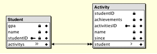

The relationship you'll add to the model is a one-to-many relationship. That is, one Student object can be related to many Activity objects. In most cases, to-many relationships need at least a foreign key and a primary key. These keys are the attributes on which the relationship joins. Follow these steps to form a relationship between Student and Activity:
studentID) to Activity's
foreign key (studentID)
as shown in Figure 3-30.Figure 3-30 Relate Student and Activity
This action creates a relationship in both entities: a to-many relationship from Student to Activity and a to-one relationship from Activity to Student.
Change the relationship name to "activities."
Figure
3-31 Relationship Inspector for Student's activities relationship
studentID is selected
in both the Source Attributes list and the Destination Attributes
list, as shown in Figure 3-31.studentID is
selected in both attributes lists as shown in Figure 3-32. Figure
3-32 Relationship Inspector for Activity's student relationship
If the Student entity is selected in the entity list,
its relationship (activities)
is shown in this pane, as Figure 3-33 illustrates. Selecting the Activity entity displays
its relationship (student),
as Figure 3-34 illustrates.
Make the activities relationship
in the Student entity a client-side class property by clicking in
the double-arrow column to the left of it, as shown in Figure 3-33. However,
do not make the student relationship in
the Activity entity a client-side class property, as shown in Figure 3-34.
Figure 3-33 Make Student to Activity relationship a client-side class property
Figure 3-34 Do not make Activity to Student relationship a client-side class property
You do not need to synchronize the schema as the Enterprise Object technology manages the relationships for you. This helps you build reusable enterprise object models since the relationship is not database-specific.